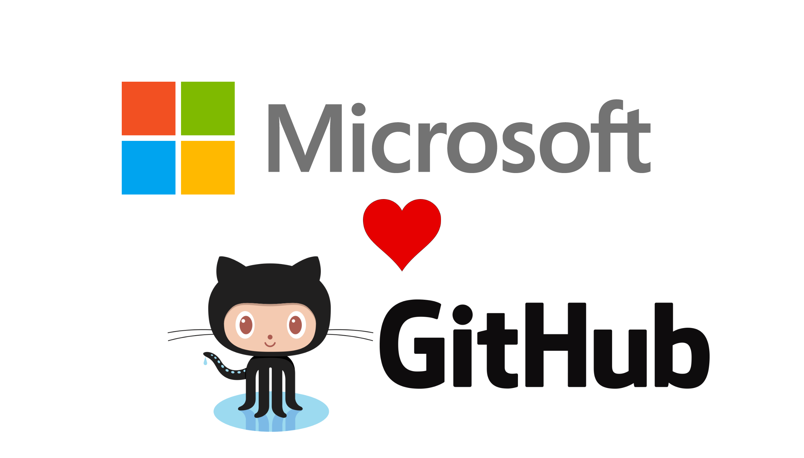
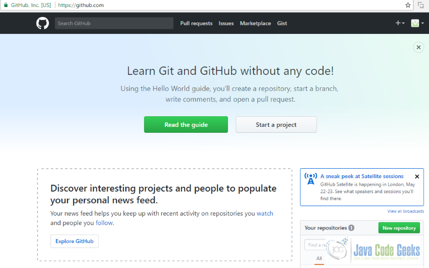

Aqui você irá descobrir o que é Git e GitHub, suas funcionalidades ou até mesmo, como você poderá dominar ambas. Parte das suas dúvidas serão desvendadas aqui. Então, vamos lá!
O que é Git?
O Git, é um sistema de controle de versão distribuída usado no desenvolvimento de grandes e pequenos projetos. Ele pode ser usado também no desenvolvimento de softwares e para registrar históricos de edição de qualquer tipo de arquivo.

História
Com o aborrecimento dos desenvolvedores do Kernel do Linux com o acesso a um software propriétario, o BitKeeper que tinha fundamentos que entravam em contrapartida com os dos mesmos (os desenvolvedores), fazendo com que eles procurassem, ou melhor, criassem uma nova ferramenta embasada nos conhecimentos passados pelo BitKeeper.
Em 2005, esta ferramenta nasceu, que era nada mais, nada menos que o Git que cresceu trazendo um funcionamento rápido e muito eficiente principalmente para os criadores de diferentes projetos.
Quais as vantagens do Git?
Bom, as vantagens de se usar o Git são inúmeras, além de ter um fácil acesso, a aprendizagem é compreensível e bastante simples. O seu tamanho minúsculo guarda algo extremamente rápido e eficaz, além disso o Git é mais eficiente que as ferramentas SCM (Gerenciamento da Cadeia de Suprimentos), com recursos de ramificação barata, áreas de preparação conveniente e vários fluxos de trabalho. Grandes empresas ainda fazem o uso do Git como o Facebook, Google, Netflix, Microsoft, Linux, Android, entre outras.
O que é GitHub?
Já ouvimos falar sobre o Git, certo? Para falar sobre o GitHub será mais simples. De forma básica o GitHub seria uma plataforma derivada do Git, ou melhor, um serviço da web que teria algumas funções extras. Nesta plataforma, quando cadastrado você pode criar, ou guardar seus projetos pessoais e até mesmo colaborar em alguns outros projetos criados por outras pessoas.
Tal plataforma é bastante usada por programadores, pois ela possibilita uma rapidez uníssona na comunicação, além de funções sem iguais.
História
Desenvolvida a partir do framework Ruby on Rails, o GitHub foi criado em 2008 pela empresa GitHub, Inc., que atuava neste ramo tecnológico desde 2007. Passou por grandes evoluções e conquistas, superando diversas empresas mas, também sofrendo diversos ataques ao longo da primeira década do séc. XXI e um pouco mais da metade da segunda, onde em 2018 foi comprada (a plataforma) pela Microsoft, que anunciou após a compra:
"A Microsoft é uma empresa que desenvolve em primeiro plano e, ao unir forças com o GitHub, fortalecemos nosso compromisso com a liberdade... Reconhecemos a responsabilidade da comunidade que assumimos com este acordo e faremos o nosso melhor trabalho para capacitar cada desenvolvedor a construir, inovar e resolver os desafios mais prementes do mundo."
Como utilizar o GitHub?
Como já foi dito, o GitHub é um serviço que nos permite criar projetos e guarda-los, uma curiosidade é que para você obtê-lo não é necessária a instalação de quaisquer aplicativo, apenas acesse ao link aqui abaixo:
Casdastrar-se no GitHubLogo após acessá-lo, você poderá criar sua conta e desenvolver os projetos que desejar.
Portanto, o Git e o GitHub são projetos que "andam de mãos dadas", sendo hoje o primeiro supervisionado por Junio Hamano e o segundo, propriedade da Microsoft. Ambas ainda são amplamente usuais, principalmente entre os atuais programadores para a criação e divulgação de projetos.